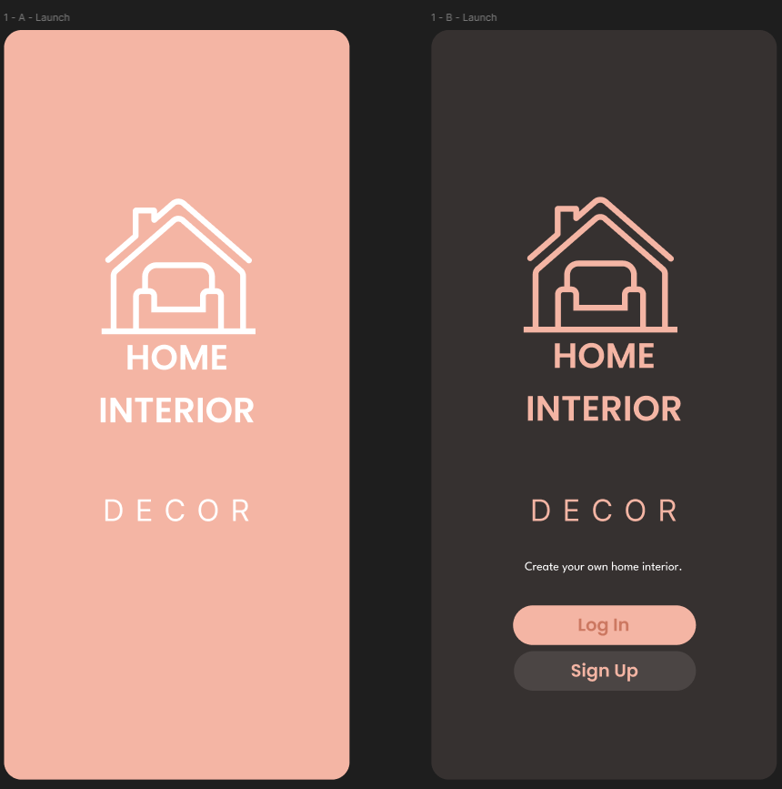
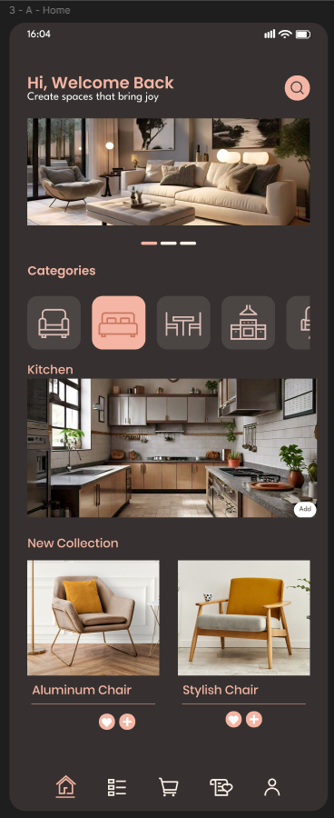

AI + Mobile Development
Home Interior Decor Mobile App
A mobile UI project for browsing home-interior inspiration, categories, kitchen collections, and furniture products through a polished, responsive interface.
View case study →Software Engineering Graduate · AI & Automation Intern at Humaitec
My portfolio proves that I can take AI and automation and turn them into real, working mobile products—combining instructional design, research, AI-assisted workflows, documentation, Flutter/Dart development, and practical AI integration to solve actual problems, not just experiment with AI in theory.
I am a Software Engineering graduate and AI & Automation Intern at Humaitec. I am developing my AI-integration skills while working on AI lead integration and mobile app development, with a focus on solutions that can be tested, used, and improved in the real world. My portfolio now includes visual evidence from my Home Interior Decor mobile app.
The portfolio is deliberately focused on evidence: practical AI integration, automation, mobile development, and the research and documentation needed to make technical work usable. Where a project is still developing, I describe it as work in progress rather than overstating the result.
A mobile UI project for browsing home-interior inspiration, categories, kitchen collections, and furniture products through a polished, responsive interface.
View case study →Internship work centered on connecting AI and automation to lead-related workflows, with attention to practical integration rather than isolated prompting.
View case study →Using research, structured documentation, and instructional thinking to make technical workflows clearer, repeatable, and easier to learn or maintain.
View case study →A real mobile-product UI project designed around home-interior discovery. The interface includes launch/authentication screens and a content-rich home experience for browsing categories, room inspiration, and furniture collections.

Home experience: category browsing, kitchen inspiration, new collection cards, search, and bottom navigation.
Launch experience: branded splash screen plus login and sign-up entry screen.My internship work gives me direct exposure to applying AI and automation inside an operational workflow instead of treating AI as a standalone experiment.
Building useful technology also requires clear thinking around the problem, requirements, workflow, and handoff. I use research and documentation to support that process.
I'm Shayma Narejo, a Bachelor's graduate in Software Engineering. I am currently interning at Humaitec as an AI and Automation Intern, where my work includes AI lead integration and mobile app development.
My goal is to become strong at practical AI integration: understanding how AI can be connected to a product or workflow so that it solves a concrete problem. I am developing this capability alongside Flutter/Dart development, research, documentation, and instructional design.
I am currently using Claude AI as part of my learning process for AI integration. I use AI as a development and reasoning aid, but the standard for this portfolio is working output: what was built, how it works, what problem it addresses, and what I learned from implementing it.
I am open to freelance and collaboration opportunities where I can contribute to AI-enabled mobile products, automation, integrations, research, or technical documentation.
I am open to freelance and collaboration work involving Flutter/Dart mobile development, AI integration, automation, lead workflows, research, and technical documentation. If the problem is real and the goal is to build something useful, I want to hear about it.